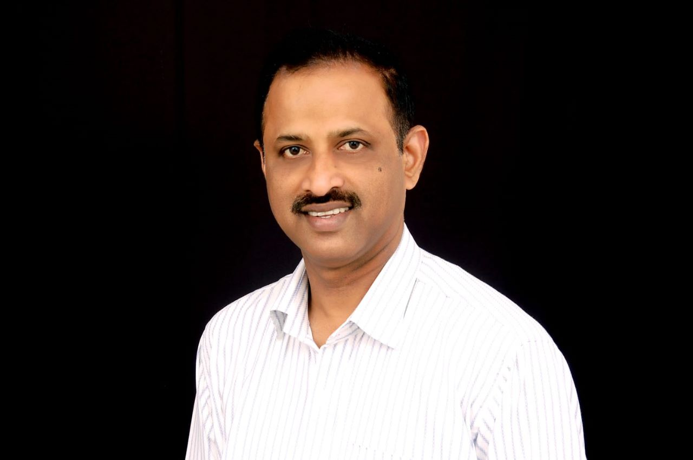
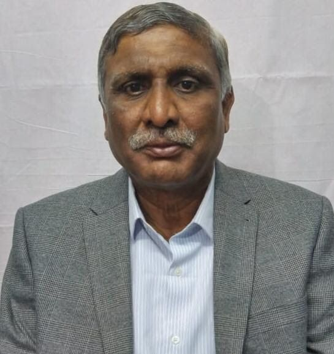

Founder of www.smeadvisors.in
Anil is a Financial specialist with broad experience in the areas of Investment Banking, Corporate Finance, Financial Management & Risk Advisory.
He has direct experience with VC/PE, SME and Agri-business, Financial Consulting, and Risk Management. He founded www.smeadvisors.in
Co-Founder of institute
Sunitha is a graduate of Business Management and had a successful stint in a management consulting company. She acquired expertise in corporate planning, financial management, supply chain management, production planning & control and business strategy.
Thereafter she has been associated with promotion of organic certification and formation of FPOs in the leadership role. Having worked in these areas and being hailed from rural community.

Mr R Kantharaj, a renowned name in organic farming promotion and has been striving to promote organic certifications, farmer enrolment and training for the last three decades.
He was the founder, director and member of a few organisations where they have rendered yeoman service to promote the cause of organic farming.
In recent years he devoted himself to promote the FPO formation in the sates of Karnataka, Telangana , Uttar Pradesh, Jarkhand etc.